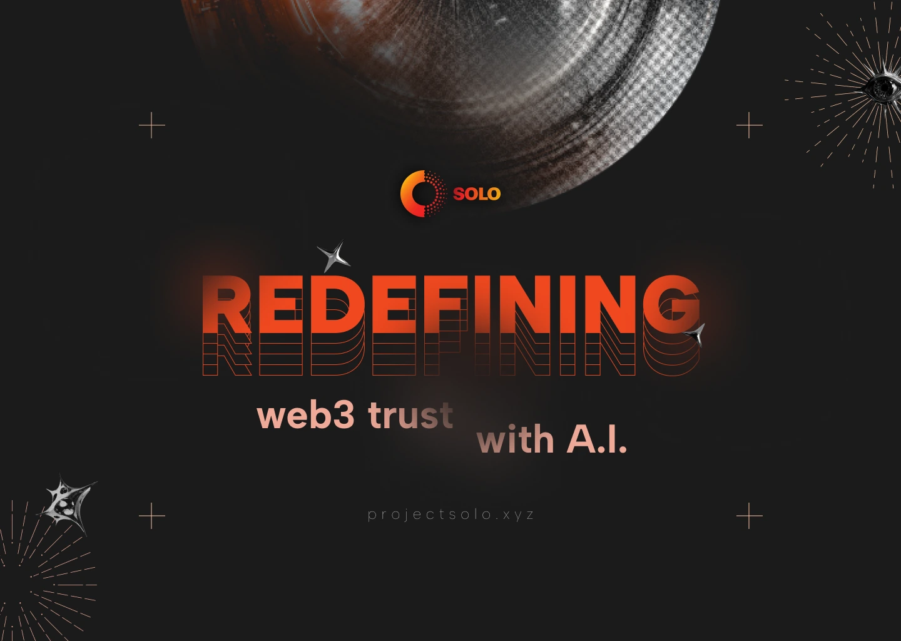
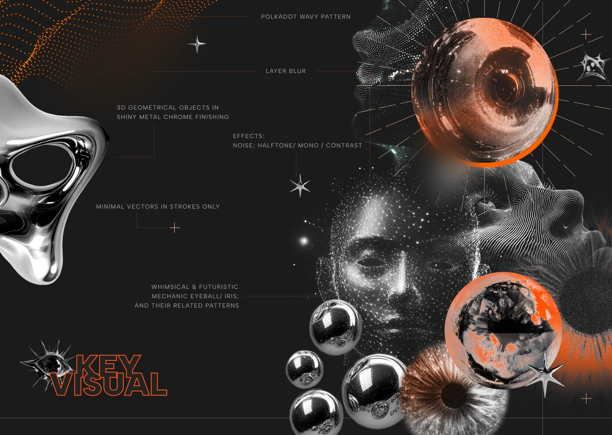
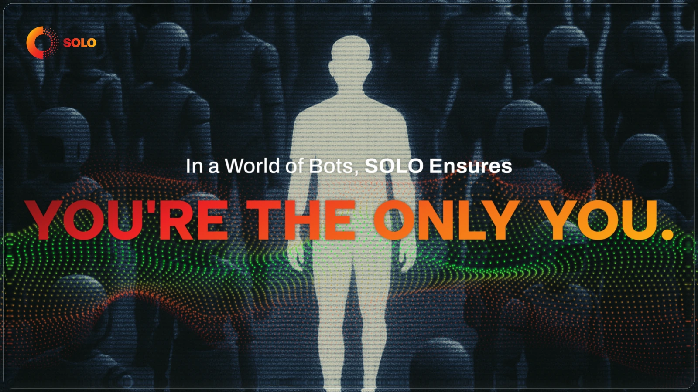
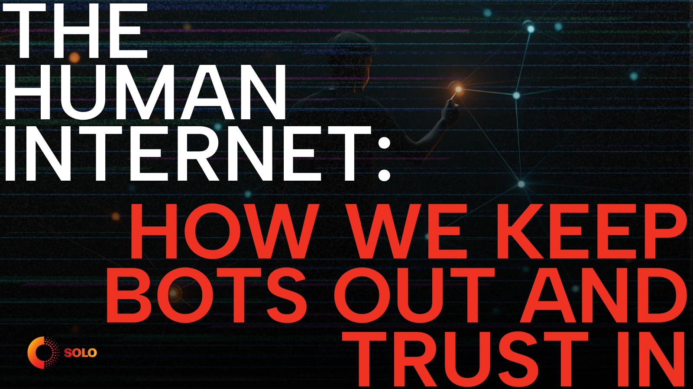

SoloMission
The SoloMission AI short film, followed by a collection of SOLO visuals on identity, privacy and online communities.
- Work
- AI short film
Social campaign graphics - Contributions
- AI video generation
Visual direction
AI storytelling
SoloMission / AI short filmWatch on YouTube
Redefining
Web3 trust.
SOLO campaign visuals exploring identity, privacy and real humans online.

A visual language.
Halftone faces, chrome surfaces and a mechanical iris give the campaign its texture. The board shows how those elements fit together.

The human internet.
Identity and trust, translated into social campaign graphics.


Across the feed.
Social campaign artwork, from AI and privacy to community giveaways.